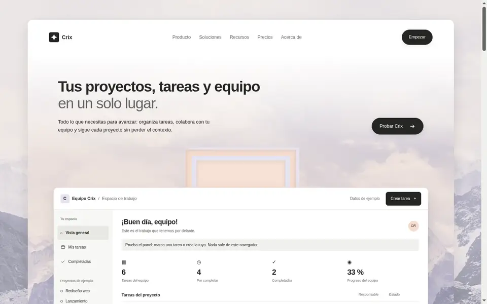

Webs populares / Crix
Diseño de muestra de diseño.md · Diseños propios
Crix

Demo independiente en español de gestión de proyectos, con montaña pastel, panel de tareas y contraste carbón. Diseño de muestra de diseño.md basado en una referencia visual; no es la web oficial de Crix ni está afiliado a ella.
Demo independiente de diseño.md, basada en una referencia visual. No es una web oficial ni un servicio comercial real.
Colores del diseño
primary
#252624on-primary
#FFFFFFsecondary
#656762accent
#F5DCCDbackground
#F7F7F5surface
#FFFFFFtext
#252624muted
#656762border
#E8E9E4Instrucción para tu IA
Crea [describe aquí tu web]. Usa el DESIGN.md que te he pasado (diseño de muestra Crix) como referencia visual: aplica sus colores, tipografías, radios y componentes, pero con mis textos, mi logotipo y mis imágenes.
Ver el archivo DESIGN.md completo (para técnicos)
192 líneas Descargar
---
version: "alpha"
name: Crix — Montaña y trabajo en equipo
description: "Sistema visual en español inspirado en la referencia Crix IMG_0995. Demo independiente, no afiliada al diseño original."
colors:
primary: "#252624"
on-primary: "#FFFFFF"
secondary: "#656762"
accent: "#F5DCCD"
background: "#F7F7F5"
surface: "#FFFFFF"
text: "#252624"
muted: "#656762"
border: "#E8E9E4"
typography:
display-lg:
fontFamily: Arial
fontSize: 2.4375rem
fontWeight: 600
lineHeight: 1.13
letterSpacing: -0.035em
headline-md:
fontFamily: Arial
fontSize: 2rem
fontWeight: 500
lineHeight: 1.12
letterSpacing: -0.035em
body-md:
fontFamily: Arial
fontSize: 1rem
fontWeight: 400
lineHeight: 1.5
letterSpacing: 0em
label-sm:
fontFamily: Arial
fontSize: 0.75rem
fontWeight: 500
lineHeight: 1.3
letterSpacing: 0em
rounded:
sm: 4px
md: 6px
lg: 10px
full: 9999px
spacing:
xs: 4px
sm: 8px
md: 16px
lg: 32px
xl: 64px
components:
button-primary:
backgroundColor: "{colors.primary}"
textColor: "{colors.on-primary}"
typography: "{typography.label-sm}"
rounded: "{rounded.full}"
padding: 11px 20px
card:
backgroundColor: "{colors.surface}"
textColor: "{colors.text}"
rounded: "{rounded.lg}"
padding: 20px
link:
backgroundColor: "{colors.background}"
textColor: "{colors.secondary}"
tag:
backgroundColor: "{colors.accent}"
textColor: "{colors.text}"
rounded: "{rounded.sm}"
padding: 3px 6px
caption:
backgroundColor: "{colors.background}"
textColor: "{colors.muted}"
typography: "{typography.label-sm}"
divider:
backgroundColor: "{colors.border}"
height: 1px
---
# Crix: proyectos, tareas y equipo en un solo lugar
Guía gratuita en español para agentes de IA. Extrae la dirección visual de la imagen **IMG_0995** aportada por Jorge: una landing clara de software colaborativo con montaña pastel, panel de trabajo y contraste carbón. No es la guía oficial de Crix ni autoriza reutilizar marcas, textos, fotografías o código de terceros. La fotografía de esta demo es una sustitución de archivo; la tipografía es una aproximación sin descargas externas.
## 1. Dirección visual
El trabajo organizado se presenta como un lugar tranquilo. Combina la precisión de un panel de tareas con un paisaje alpino de tonos lavanda, melocotón y blanco. La emoción está en la fotografía; la interfaz permanece neutra y funcional.
**No reinterpretar la composición como una web oscura, una agencia de IA o un panel financiero.** El bloque carbón central y el cierre oscuro son pausas dentro de una página predominantemente clara.
### Firma que debe mantenerse
- Un lienzo blanco estrecho y centrado sobre una fotografía de montaña.
- Titular alineado a la izquierda y CTA a su derecha en escritorio.
- Un marco rectangular melocotón/lavanda detrás del panel del producto.
- Panel de gestión blanco que invade el paisaje y vuelve al fondo claro.
- Sección oscura con acordeón a la izquierda y vista del producto a la derecha.
- Footer con paisaje a sangre y **CRIX** enorme en serif, claro y translúcido.
## 2. Colores y materiales
| Uso | Valor | Regla |
| --- | --- | --- |
| Fondo de la página | `#F7F7F5` | Casi blanco, neutro, sin textura artificial |
| Tarjetas y paneles | `#FFFFFF` | Superficies de producto limpias |
| Texto y CTA | `#252624` | Carbón; nunca negro azulado |
| Texto secundario | `#656762` | Legible sobre blanco y fondo claro |
| Texto de titulares atenuados | `#83857E` | Solo texto grande, no cuerpo pequeño |
| Bordes | `#E8E9E4` | Divisiones discretas del panel |
| Sección oscura | `#272825` | Una banda completa, no tarjetas negras repetidas |
| Texto sobre oscuro | `#F8F8F4` / `#C7C9C0` | Primario / secundario |
| Paisaje y marco | `#F5DCCD` / `#E6E3F1` | Melocotón y lavanda suaves |
| Estado completado | `#E7EEE3` / `#46623B` | Fondo / texto verde apagado |
| Estado en curso | `#F3EADB` / `#75572D` | Fondo / texto ámbar |
| Foco de teclado | `#3B674E` | Contorno de 3px, inmediato |
Usar variables CSS en `:root`; no dispersar colores literales entre componentes. No añadir degradados morados/azules. Los únicos degradados son máscaras neutras que funden la fotografía con el blanco. Sombra de elevación: `0 14px 32px #292b2520`; sombra ligera: `0 4px 10px #292b2516`.
## 3. Tipografía
La demo utiliza **Arial, Helvetica, sans-serif** para funcionar sin red y mantener el tono neutro de la referencia; no se ha identificado la fuente original. Si se sustituye, comparar antes las métricas y saltos de línea. No mezclar fuentes decorativas en titulares o botones. **Georgia** queda reservada a la gran palabra CRIX del footer.
| Elemento | Escritorio | Móvil |
| --- | --- | --- |
| H1 | 39px / 1.13, peso 600 | 34px / 1.1 |
| H2 de sección | 32px / 1.12, peso 500 | 29px / 1.13 |
| Declaración introductoria | 31px / 1.26 | 26px / 1.23 |
| Titular del cierre | 46px / 0.98 | 40px / 1.02 |
| Cita editorial | 29px / 1.17 | 26px / 1.2 |
| Texto de marketing compacto | 12–13px / 1.5–1.6 | 13–14px / 1.6 |
| Botones | 11–12px | 12px, alto táctil mínimo 44px |
| Palabra CRIX | Hasta 340px / 0.87 | `clamp(135px, 34vw, 210px)` |
Tracking de titulares entre `-0.025em` y `-0.04em`. `text-wrap: balance` en encabezados y `pretty` en párrafos. No usar mayúsculas espaciadas para etiquetas. En titulares, puede atenuarse una frase completa en gris, nunca una sola palabra en cursiva. Las miniaturas de producto tienen texto de escala reducida porque representan interfaces; no usar esa escala para el cuerpo de la web.
## 4. Composición exacta de la demo
El JPEG de referencia muestra una página larga dividida en dos columnas para poder verla completa: la columna derecha es la continuación de la izquierda, **no** un layout web de dos páginas paralelas.
1. **Cabecera:** logotipo compacto, cinco enlaces centrales, CTA negro a la derecha. Fondo blanco. Alto aproximado 92px.
2. **Hero:** titular a la izquierda, una frase breve debajo y CTA a la derecha. Paisaje de montaña pastel a sangre, fundido con blanco arriba y con el fondo de la página abajo. Un marco sin contenido detrás del panel recuerda un portal. Panel de trabajo con sidebar, resumen y tabla de tareas.
3. **Declaración:** párrafo grande en gris con la primera frase en carbón. Tres pasos con número pequeño en cuadrado oscuro, título y texto breve, sobre blanco.
4. **Funciones:** título centrado en dos líneas, descripción, CTA y tres tarjetas con miniaturas de producto: tareas, seguimiento e integraciones conceptuales.
5. **Cómo funciona:** banda carbón; título centrado y botón claro. Debajo, texto y tres acordeones a la izquierda; vista clara del producto a la derecha. Sin barra de navegador dibujada.
6. **Precios:** título a la izquierda, selector mensual/anual a la derecha. Tres planes blancos. El central lleva un pequeño remate fotográfico y CTA carbón. Los otros dos usan botones gris claro. Mantener la posición de los tres y el contraste del central.
7. **Cita editorial:** texto centrado grande, primera frase oscura y resto gris. Marca circular pequeña, autoría de producto, aviso de texto ilustrativo. No inventar una reseña atribuida a una persona real.
8. **Cierre:** fondo carbón; un panel claro centrado sube desde el borde inferior. Titular grande a la izquierda, una frase y dos acciones pequeñas: probar demo y descargar esta guía.
9. **Footer:** texto de marca a la izquierda, dos columnas de navegación a la derecha, paisaje debajo y palabra CRIX gigante. Créditos y aviso de demo en el propio footer.
### Medidas y ritmo
Lienzo exterior de **1120px** máximo, margen superior de 52px y esquinas superiores de 14px. Contenido interior de **960px** máximo y márgenes simétricos. Gutter de 56px por lado en escritorio. Columnas de contenido separadas **22px**. Secciones con 86px de padding vertical, ajustadas a 58px en móvil. Radios: 4–6px para elementos pequeños, 10px para paneles, 999px para CTA de marketing. Las tarjetas de precios y el panel usan botones de 6px para parecer controles de producto, no elementos flotantes.
## 5. Responsive para iPhone
- Hasta 1160px: margen exterior de 24px; gutter interior de 40px.
- Hasta 800px: margen exterior de 14px; gutter de 28px; miniaturas compactas.
- Hasta 600px: lienzo a todo el ancho, sin margen exterior; gutter de 20px.
- Cabecera con botón Menú desplegable; sin JavaScript los enlaces quedan visibles.
- H1 y CTA apilados, sin esconder el mensaje principal ni la acción.
- Sidebar del panel convertida en tres botones horizontales; tareas se mantienen legibles y accionables, no se recorta una captura de escritorio.
- Pasos, funciones y planes pasan a una columna; las miniaturas vuelven a crecer.
- Acordeón y vista de producto se apilan. Footer mantiene dos columnas de enlaces.
- No scroll horizontal a 320, 375, 390, 768, 1024 ni 1440px. Corregir el origen del desbordamiento; `overflow-x: clip` en html y body es una protección, no el arreglo.
- Respetar `safe-area-inset-bottom`, zoom del navegador y objetivos táctiles de 44px para acciones principales.
## 6. Interacciones reales y estados
La demo es un ejercicio local, **no un SaaS operativo**. Los CTA llevan al panel de ejemplo. Se pueden completar tareas, filtrar pendientes/completadas y añadir una tarea. Las cifras proceden de las tareas visibles en el DOM; no son métricas comerciales. Nada se envía ni persiste tras recargar.
El selector de precios alterna entre importes mensuales y equivalentes mensuales de la vista anual. Debe indicar el total anual y que no hay cobro. Los importes de ejemplo son 10/25/39 € mensuales y 8/20/32 € equivalentes mensuales anuales, no una oferta real.
Usar HTML semántico: `button`, `a`, `input`, `details/summary`, `fieldset/legend`. El panel anuncia cambios mediante `role="status"`. El formulario tiene etiqueta, validación, límite de 80 caracteres y botón Cancelar. Insertar contenido de usuario con `textContent`, nunca `innerHTML`. No añadir login falso, checkout, peticiones a APIs ni formularios que finjan envío.
Microinteracción de botones: opacidad al hover y escala `0.97` al presionar, 160ms con `cubic-bezier(.23,1,.32,1)`. No animación automática de gráficos, acordeones ni tarjetas. Con `prefers-reduced-motion: reduce`, desactivar transiciones y desplazamiento suave. Foco de teclado instantáneo y visible, sin depender del color o del hover para explicar el estado.
## 7. Contenido, imágenes y accesibilidad
Todo el contenido de uso va en español. Las fotos de archivo y las vistas de producto se identifican como ilustrativas. La referencia no acredita clientes, cifras de negocio ni testimonios verificables: no añadirlos.
La fotografía local `assets/montanas.webp` procede de [Unsplash](https://images.unsplash.com/photo-1454496522488-7a8e488e8606), con adaptación cromática y compresión. Usarla como fondo decorativo. El cliente puede sustituirla por una imagen propia con cumbres nevadas, nubes, cielo claro y profundidad. No confundir la sustitución de archivo con una fotografía original de Crix.
Contraste: cuerpo ≥4.5:1; titulares grandes e iconos ≥3:1. Todos los controles tienen nombre accesible y foco visible. Iconos decorativos con `aria-hidden="true"`. No ocultar contenido de marketing esencial en móvil. Mantener un solo H1 y orden H2/H3 sin saltos.
## 8. SEO, GEO, AEO y entrega
Título y descripción en español, `lang="es"`, Open Graph y tarjeta social de 1200×630. JSON-LD de tipo `WebPage`, que identifica una demo visual y explica qué incluye sin fingir ser un servicio o una empresa. No incluir `Review`, `AggregateRating` ni `Offer` con datos inventados. Al integrarla, el mantenedor debe convertir la imagen Open Graph relativa en URL absoluta y fijar canonical a la URL final real; no se conoce todavía esa ruta y no debe inventarse.
Entregar los archivos estáticos con `index.html` en la raíz del ZIP para Cloudflare Pages y un HTML autónomo con estilos, JavaScript, fotografía y esta guía embebidos. No requiere framework, cuenta, clave ni servicios de pago. El mantenedor de ia.cuadrantia.store decide ruta, enlaces e integración: esta carpeta no modifica su sitio.
## 9. Instrucción lista para pegar a una IA
> Lee este DESIGN.md y respeta la composición Crix: página clara centrada sobre montaña pastel, portal rectangular y panel de tareas en el hero; declaración editorial y tres pasos; tres vistas de funciones; banda carbón con acordeón y panel; tres planes con el central destacado; cita editorial honesta; cierre claro sobre carbón; footer de montaña con CRIX gigante en serif. Trabaja en español y adapta de verdad a iPhone. Usa los tokens y proporciones de esta guía. Todos los controles visibles deben funcionar o identificarse como representación ilustrativa. No inventes clientes, reseñas, estadísticas ni un backend. No conviertas esta referencia en una landing genérica de IA.